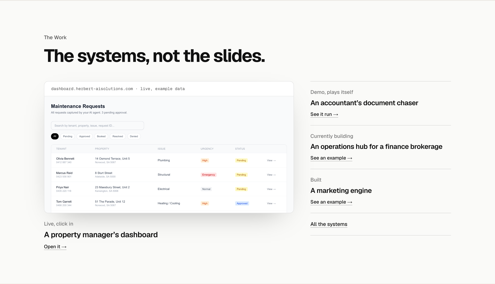
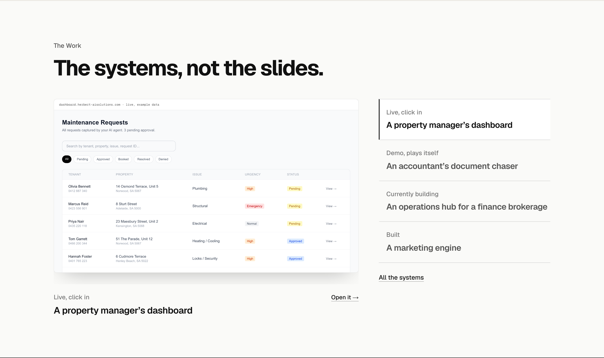
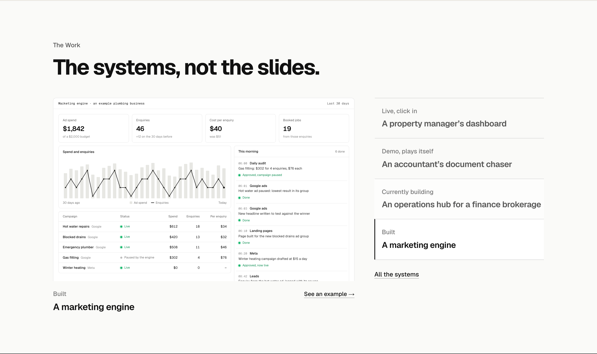
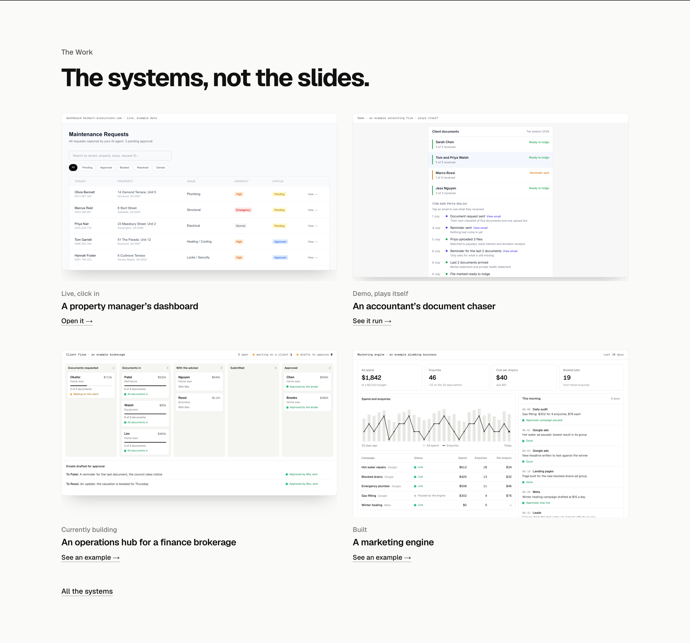
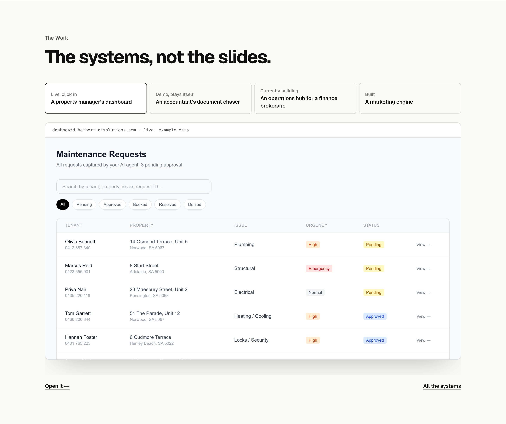

The Work, done properly
The section after the AI employees scene, so each option stays calm until the visitor clicks or hovers; then that system plays once. Every system now has its own visual: the live property dashboard, the accountant demo, the brokerage hub’s pipeline (shown on the live site only once Rob clears it; words until then) and the marketing engine’s dashboard. Shown at 1440, finished state. They run at /lab/the-work-2.
TodayOption C as built: the dashboard still, the rest as a list. 824px. For comparison, not an option.

A. Option C, with the list as switchesYour pick kept: one screen large, the four beside it, and clicking one swaps the screen and plays it once. It opens on the live dashboard; the second picture is the same section with the marketing engine picked. 853px. Recommended: every system gets the big screen, the section stays calm until clicked, and it keeps the shape you chose.


B. Four screens at onceAll four screens in a 2 by 2 grid, each playing when hovered. The most to look at, and nothing to click to find it, but each screen is smaller, and on a phone it is four screens to scroll past. 1342px.

C. Tabs over a full-width stageFour tabs across the top and one wide screen, swapping and playing on click. The biggest screen, and the tallest section (1207px), so the next section does not show under it.
